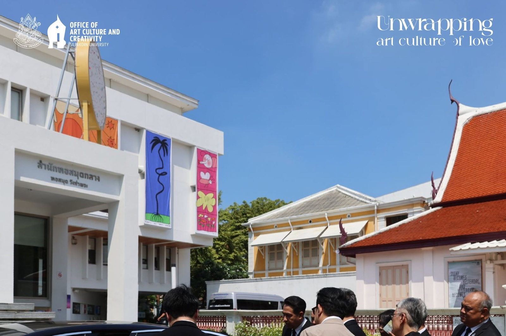

พื้นที่ศิลปะ วัฒนธรรม และการสร้างสรรค์ เผยแพร่สู่สาธารณชน
Highlights
What's On
What's Around SU
About Us
เราทำหน้าที่อนุรักษ์ ส่งเสริม และเผยแพร่ศิลปวัฒนธรรมของชาติและของมหาวิทยาลัยศิลปากร พร้อมสร้างสรรค์องค์ความรู้และผลงานใหม่สู่สังคม

Collection